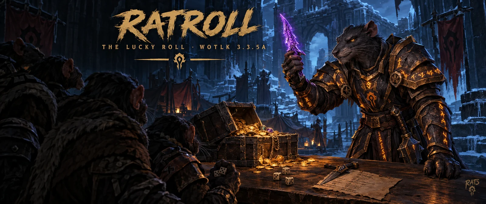
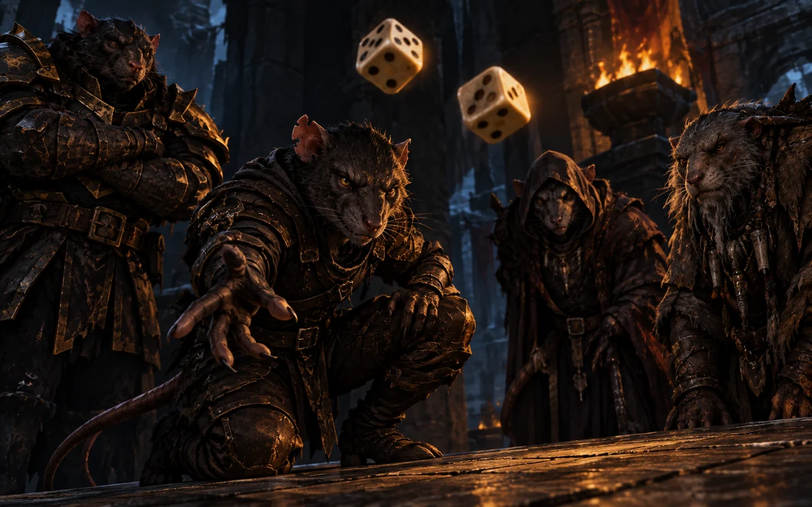
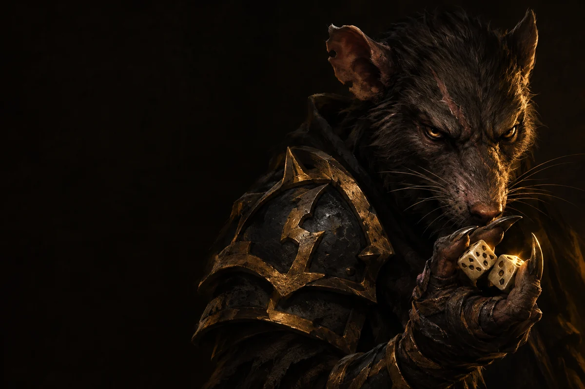
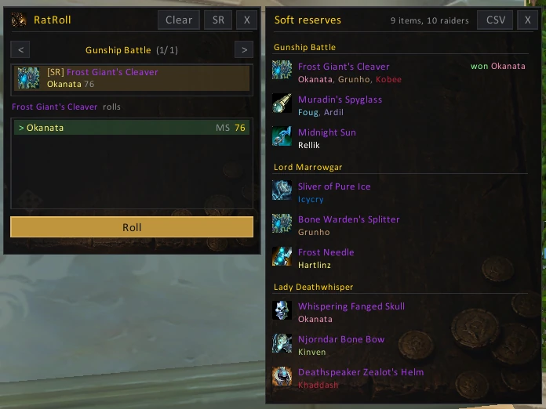
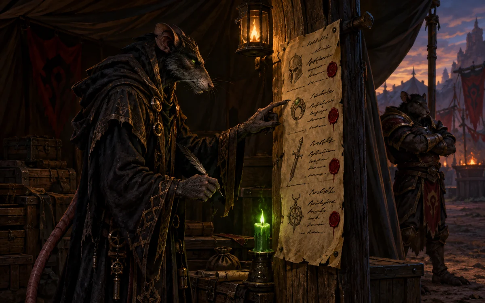
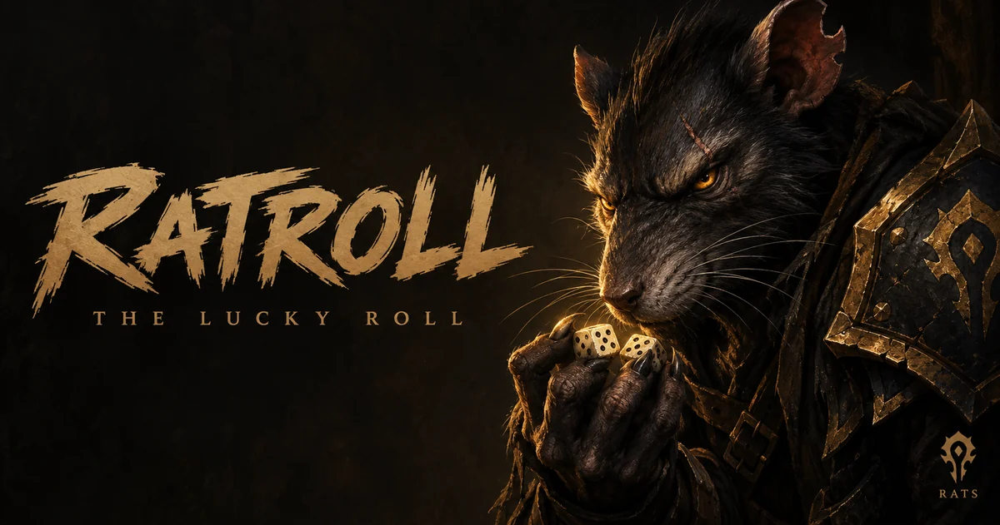

Your list, your Clear
The loot stays saved after you log off, so you can check the last raid later. Clear (two clicks) deletes your own list. Nobody else's changes.
WotLK 3.3.5a · Released
The loot part of Okanvil, on its own: a small roll window, master loot in a click and softres.it reserves. Nothing else to set up.

The window opens when loot drops and shows it boss by boss. Click an item to see its rolls, best first. It stays out of the way: no popups, and it closes when the boss is pulled.

As master looter you get one more button. Roll announces the item for main or off spec; once the rolls are in it turns into Give, which hands the item to the top roll.

On softres.it, Export → CSV. In game, as master looter: SR, then CSV, paste, Import. Nobody else has to paste anything.

Things you only notice when they're missing.
The loot stays saved after you log off, so you can check the last raid later. Clear (two clicks) deletes your own list. Nobody else's changes.
Same code, same messages. Already running Okanvil? You have all of this, and RatRoll switches itself off.
No main window, no minimap button, no popups. A DBM pull closes the roll window.
The lucky rat on the icon and behind the windows, and the loot night around him.


Already using Okanvil? You have all of this; RatRoll switches itself off.
World of Warcraft\Interface\AddOns\RatRoll/rr opens the roll window, /ratroll help lists
the commands.